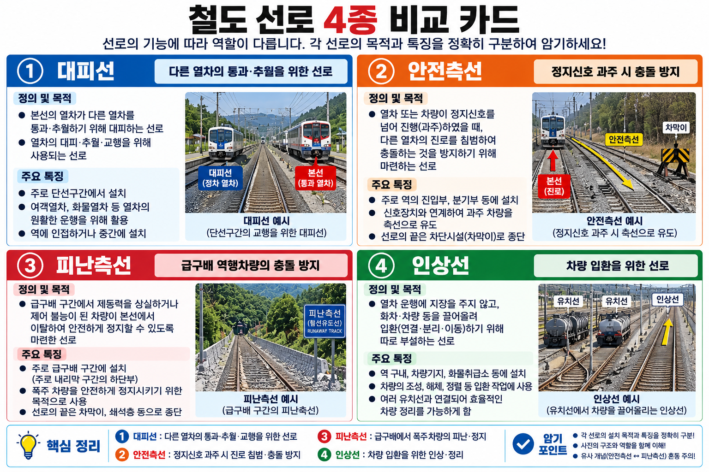

본선(本線): 열차 운전에 상용(常用)하는 선로. 철도의 핵심 선로.
측선(側線): 본선 이외의 선로 전반. 정거장 구내에서 대피·입환·유치·안전 등 보조 기능을 수행하는 모든 선로.
이 UNIT(05-01)은 SOURCE 31 범위 내의 측선 세부 종류 4종(대피선·안전측선·피난측선·인상선)의 정의·설치기준·목적을 다룬다.

| 종류 | 목적·기능 | 설치 기준·위치 |
|---|---|---|
| 대피선(待避線) | 열차가 다른 열차를 대피(교행·추월)하기 위해 일시 정차하는 선로. | 교행 또는 추월이 필요한 정거장 구내. 본선과 연결된 측선 형태. |
| 안전측선(安全側線) | 정거장에 동시 진입하는 열차 간 충돌 방지. 분기기 개통 오류 등으로 잘못 진입하는 차량을 정거장 밖 지장 없는 선로로 유도. | 단선구간 또는 2개 이상의 열차·차량이 동시에 출발·진입하는 정거장 구내 (제21조 제3항). |
| 피난측선(避難側線) | 급구배에서 제동 실패 등으로 역행(逆行)하는 차량의 충돌 방지. | 급구배 구간 종단에 설치. |
| 인상선(引上線) | 차량 입환 작업 시 차량을 일시적으로 이동·분리하기 위해 당겨 올리는 선로. | 조차장·화물역 구내. 입환 작업 공간 확보 목적. |
안전측선(安全側線): 정거장에서 2개 이상의 열차·차량이 동시에 출발하거나 진입하는 경우, 분기기 개통 오류 등으로 인한 충돌을 막기 위해 설치하는 측선.
잘못 진입한 차량을 정거장 외의 지장이 없는 방향으로 유도하여, 정거장 내 다른 차량과의 충돌을 원천적으로 차단한다.
설치 대상: 단선구간, 또는 2개 이상의 열차·차량이 동시에 출발·진입하는 정거장 구내 (「철도의 건설기준에 관한 규정」 제21조 제3항).
피난측선(避難側線): 급구배(steep grade) 구간에서 제동 실패 등으로 열차가 원래 진행 방향의 반대로 미끄러지는 역행(逆行) 발생 시, 본선 상의 다른 열차와의 충돌을 막기 위해 설치하는 측선.
역행 차량을 급구배 구간 종단의 피난측선으로 유도하여 안전하게 정지시킨다.
대피선(待避線): 열차 간 교행·추월을 위해 열차가 일시 정차하는 측선. 단선 구간에서 교행이 잦은 정거장에 필수적으로 설치된다.
인상선(引上線): 조차장·화물역에서 차량 입환(입환: 차량을 분리·결합·이동하는 작업) 시 차량을 당겨 올려 이동·분리하기 위한 선로. 입환 작업 공간 확보 및 차량 분류 효율을 높이는 역할을 한다.
Q1 정답 ②
대피선(待避線): 열차가 교행(단선에서 서로 교차) 또는 추월을 위해 일시 정차하는 측선. 안전측선은 동시진입 충돌 방지, 피난측선은 역행 방호, 인상선은 입환 작업용이다.
Q2 정답 ②
안전측선(安全側線): 단선구간 또는 2개 이상의 열차·차량이 동시에 출발·진입하는 정거장 구내에 설치하여, 분기기 오류 등으로 잘못 진입한 차량을 다른 차량과의 충돌 없이 유도하는 측선. 피난측선과 혼동 주의 — 피난측선은 역행 방호용이다.
Q3 정답 ②
피난측선(避難側線): 급구배 구간에서 제동 실패 등으로 역행하는 차량을 본선 상의 다른 열차와의 충돌로부터 보호하기 위해 급구배 구간 종단에 설치하는 측선. 안전측선과 목적·설치 위치가 다르다 — 안전측선=동시진입충돌방지, 피난측선=역행방호.
Q4 정답 ②
대피선: 교행·추월을 위해 열차가 일시 정차하는 측선. 안전측선: 동시진입 열차 간 충돌 방지를 위해 설치하는 측선. ①③④는 대피선과 안전측선의 목적을 혼동한 오답이다.